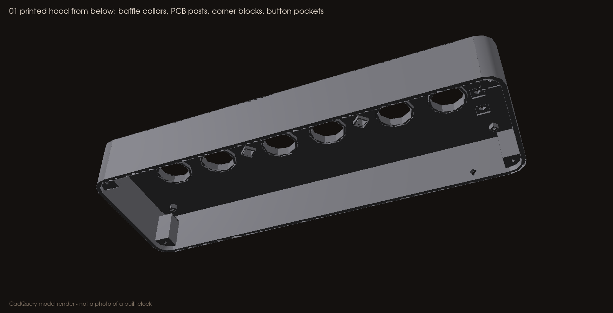
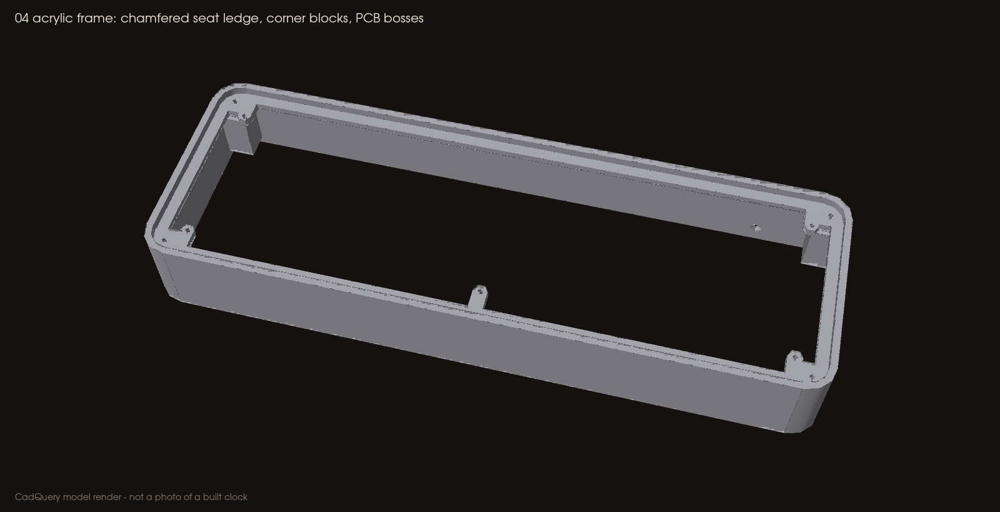

Printing the enclosure
Everything here is a baseline, untested starting point. Print the fit coupons first and adjust cad/DIMENSIONS.json, not the slicer scale.
Which files to slice
| Use | Files | Orientation |
|---|---|---|
| Slice these | cad/stl/*.stl or cad/3mf/*.3mf, or the ready plates in cad/print/ |
Print orientation, already on the bed |
| CAD reference only | cad/step/*.step, cad/Assembly_RevC_*.step |
Assembly coordinates: do not slice |
| Never print | cad/PCB_mechanical_RevC.step (PCB, glass, spacers, lamps, switches) |
Envelopes for fit checks |
Do not print any glass, PCB or switch body. Do not slice an assembly-coordinate STEP in place of a print-oriented part: the hood, for example, prints upside down.
Parts and plates
| Plate | Parts | Needed for |
|---|---|---|
plate_0_fit_coupons.3mf |
06 fit coupon, 07 unpowered lead-pattern coupon | Everyone, first |
plate_A_all_printed_hood.3mf |
01 printed hood (upside down: top face on the bed) | All-printed option |
plate_B_clear_top_frame.3mf |
04 acrylic frame (upright) | Clear-top option |
plate_C_shared_floor_and_clamp.3mf |
02 bottom cover, 03 cable clamp | Both options |
stl/05_optional_top_plate_3mm.stl |
Printed stand-in for the acrylic top | Only if you cannot get acrylic cut; it will not be clear |
Coupon 07 carries only the IN-14 lead pattern. It is never a powered tube spacer. Keep the factory spacers on your tubes.


Printer bed
The hood and frame are 234 × 80 mm. You need at least about 240 × 85 mm of usable bed. A 220 × 220 mm bed is too small even diagonally.
Baseline settings (PETG, matte)
| Setting | Value |
|---|---|
| Layer height | 0.20 mm |
| Walls | 4 |
| Top / bottom layers | 5 / 5 |
| Infill | 20–25 % (gyroid or grid) |
| Supports | Off for the hood, floor, clamp and coupons. Frame (04): painted supports under the five PCB bosses and the four upper corner blocks only |
| Brim | 5 mm on the hood and frame helps long, thin PETG parts stay flat |
Inspect in the slicer before printing
- Holes: the 1.7 mm pilots show as holes in every post, including the blind ones in the hood that stop 1 mm under the visible top.
- Posts: the five PCB posts and the four corner blocks are solid, not hollow.
- Baffles: the hood's collars around the tube and lamp openings are present; they block line of sight to HV leads.
- Switch pockets: three 7.4 mm square pockets on the hood underside.
- Frame ledge: the stepped 45° chamfer under the acrylic seat.
- Cable path: the 4.2 mm rear opening, and the cradle and two bosses on the floor.
After printing
- Tap every 1.7 mm pilot with an M2 tap. Clear chips.
- Check the acrylic (or printed plate 05) drops into the frame without force.
- Check each tube opening with a real tube; never force glass.
Changing a dimension
- Edit the value in
cad/DIMENSIONS.json(for exampletube_opening_d). - Run
scripts/render_cad. It rebuilds every STEP, STL, 3MF, plate, the DXF and the preview images, then runs the geometry checks, so the outputs never drift from the source. - Reprint the coupon. Record the change in VALIDATION.md.
Never scale a part uniformly to fix a hole. That moves every screw post too.
Acrylic top
Cut cad/Acrylic_top_3mm_1to1.dxf (layer CUT, millimetres, 1:1) from 3 mm clear cast acrylic. Before cutting, confirm the laser software reads it as 228.8 × 74.8 mm. The tube holes are 19.4 mm, the lamp holes 7 mm, the switch holes 9 mm (to clear the switch bodies), and the four corner screw holes 2.4 mm.